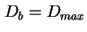
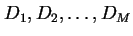
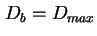
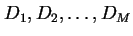
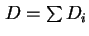

คือค่าความต้องการการบริการจากอุปกรณ์
คือค่าความต้องการการบริการจากอุปกรณ์  ในแต่ละครั้งของการเข้าใช้ระบบ ซึ่งรวมเวลาการเข้าใช้บริการทุกครั้งเข้าด้วยกัน
ในแต่ละครั้งของการเข้าใช้ระบบ ซึ่งรวมเวลาการเข้าใช้บริการทุกครั้งเข้าด้วยกัน
จากกฎการไหลของงาน ค่าภาระงานของอุปกรณ์แปนผันตรง กับค่าความต้องการการบริการ  ของงานบนอุปกรณ์นั้น
ของงานบนอุปกรณ์นั้น
| (7.58) |
อุปกรณ์ใดที่มีค่าความต้องการการบริการ  สูงสุดในระบบ จะเป็นเรียกว่าเป็น อุปกรณ์คอขวด หรือ Bottleneck Device อุปกรณ์ตัวที่เป็นคอขวดจะเป็นตัวจำกัดอัตราความสำเร็จโดยรวมของระบบ การปรับปรุงอุปกรณ์คอขวดจะส่งผลให้เห็นต่อประสิทธิภาพสูงสุดในรูปของอัตราความสำเร็จ การปรับปรุงอุปกรณ์ตัวอื่นจะไม่กระทบต่อประสิทธิภาพมากนัก ดังนั้น การหาอุปกรณ์ที่เป็นคอขวดในระบบเป็นขั้นแรกของการทำการวิเคราะห์ประสิทธิภาพใดๆ
สูงสุดในระบบ จะเป็นเรียกว่าเป็น อุปกรณ์คอขวด หรือ Bottleneck Device อุปกรณ์ตัวที่เป็นคอขวดจะเป็นตัวจำกัดอัตราความสำเร็จโดยรวมของระบบ การปรับปรุงอุปกรณ์คอขวดจะส่งผลให้เห็นต่อประสิทธิภาพสูงสุดในรูปของอัตราความสำเร็จ การปรับปรุงอุปกรณ์ตัวอื่นจะไม่กระทบต่อประสิทธิภาพมากนัก ดังนั้น การหาอุปกรณ์ที่เป็นคอขวดในระบบเป็นขั้นแรกของการทำการวิเคราะห์ประสิทธิภาพใดๆ
สมมุติให้เราพบว่าอุปกรณ์  เป็นคอขวด นั้นหมายถึง  ซึ่งมีค่าสูงสุดในบรรดา
 ค่าอัตราความสำเร็จ และเวลาตอบสนองของระบบจะถูกจำกัดโดยกรอบดังนี้
เป็นคอขวด นั้นหมายถึง  ซึ่งมีค่าสูงสุดในบรรดา
 ค่าอัตราความสำเร็จ และเวลาตอบสนองของระบบจะถูกจำกัดโดยกรอบดังนี้
และ
ในที่นี้  คือค่าความต้องการบริการโดยรวมของทุกอุปกรณ์ ยกเว้นเทอร์มินอล สมการ 7.63 และ 7.64 คือสมการ Asymptotic Bounds ซึ่งสามารถพิสูจน์ได้ดังนี้